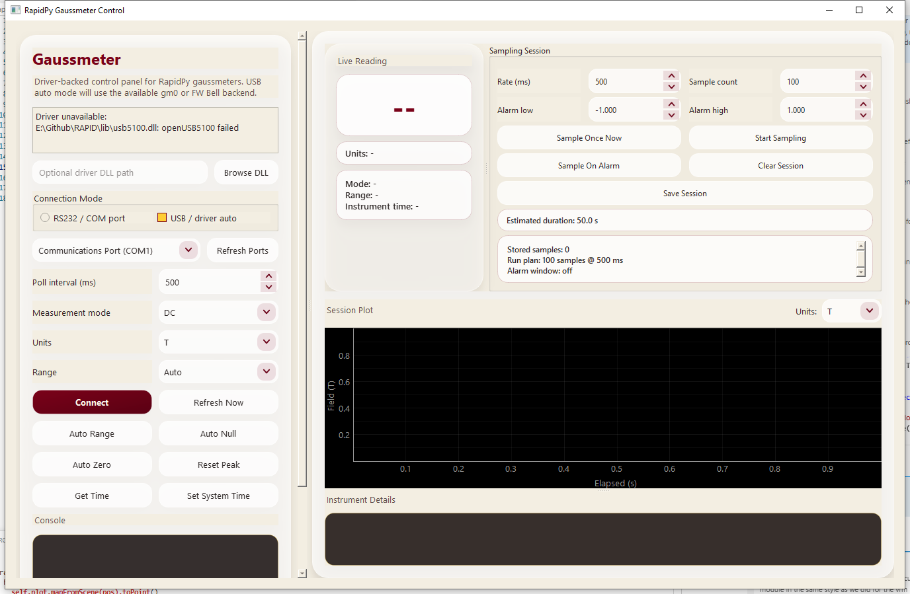
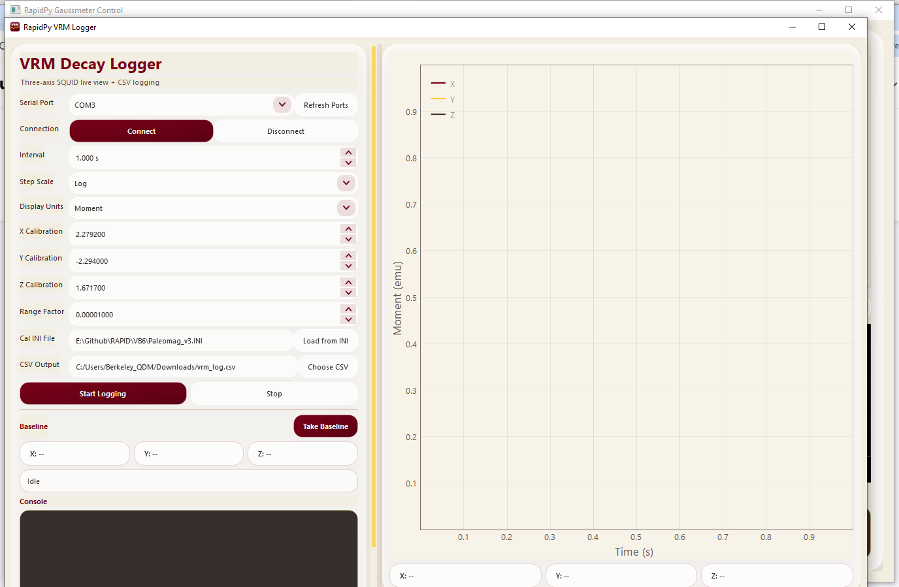

RAPID is being rewritten from legacy 32-bit Visual Basic 6 into a clean Python 64-bit stack — keeping the same instrument protocols while adding live plotting, CSV export, and a maintainable open codebase.
Released Apps
Each module is a self-contained executable — operators can run only the panels they need without installing the full system.

Driver-backed operator panel for the FW Bell 908A USB gaussmeter. Live field readings, configurable sampling sessions with alarm thresholds, and an interactive hover tooltip on the session plot.

Three-axis SQUID live-view logger for viscous remanent magnetisation decay experiments. Configurable log/linear time steps, per-axis calibration, and direct legacy INI file loading.
Diagnostic panel for testing ADwin Gold II digital and analog I/O channels before running AF demagnetisation or DC motor control routines. Live square-wave output visualisation.
Alternating-field coil tuning panel — Python port of
frmAFTuner. Manages ADwin-driven AF ramps,
relay selection, and field calibration curves.
Sample queue prep and XY table control panel — port of
frmChanger. Handles
HomeToCenter and MoveToCorner
routines with limit-switch guidance.
Unified operator launcher for all converted subsystem panels — replacement for the VB6 main form. Orchestrates startup sequencing, hardware checks, and inter-panel communication.
Codebase
A shared hardware abstraction layer sits beneath all subsystem apps, keeping driver code in one place and subsystem UIs thin.
RAPID/ ├── RapidPy/ │ ├── rapidpy_common/ # Shared layer │ │ ├── ui.py # UMN maroon/gold style sheet │ │ ├── hardware.py # Quicksilver motor protocol + motion helpers │ │ ├── adwin_af.py # ADwin AF ramp backend │ │ └── gaussmeter.py # gm0.dll / FW Bell wrapper │ │ │ ├── gaussmeter_control/ # ✅ Released │ ├── vrm_logger/ # ✅ Released │ ├── adwin_comms/ # ✅ Released │ ├── af_tuner/ # 🔧 In progress │ ├── changer_xy_control/ # 🔧 In progress │ ├── updown_control/ # 🔧 In progress │ ├── dc_motor_control/ # 🔧 In progress │ └── system_shell/ # 📋 Planned │ ├── installer/ # PyInstaller specs + Inno Setup ├── docs/ # User and developer manuals └── VB6/ # Original VB6 source (reference)
Transition Plan
Subsystem-by-subsystem replacement, each validated against real hardware before the next one begins.
gm0.dll, FW Bell usb5100.dll,
Quicksilver motor protocol, and ADwin AF ramp. UMN maroon/gold Qt style sheet.
RAPID is open source under GPLv3. Bug reports, hardware compatibility notes, and pull requests are welcome.